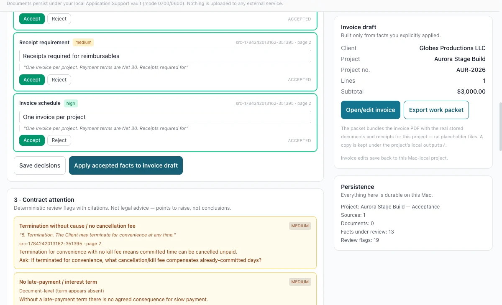

Job — stop retyping the contract
Each proposed fact carries its own citation
Extracted facts arrive one at a time with a confidence weighting, the quoted sentence they came from and the page it sits on. You accept, edit or reject each one, and applying the accepted set is the only action that touches the invoice draft.
- Billing address, client legal name, receipt requirements and invoice schedule proposed separately
- Every proposal quoting its source sentence and page rather than asserting a conclusion
- Accept, edit or reject per fact, with decisions saved before anything is applied
- Contract attention flags raised deterministically with the clause they refer to
Boundary The review flags are prompts, not legal advice. The interface states it plainly: they are points to raise, not conclusions, and they do not replace a lawyer reading your agreement.

Cropped from the exact synthetic local-vault runtime evidence. Two facts accepted, and the draft still untouched until “Apply accepted facts to invoice draft” is pressed — while the attention panel asks what a termination clause with no cancellation fee would cost in already-committed days.